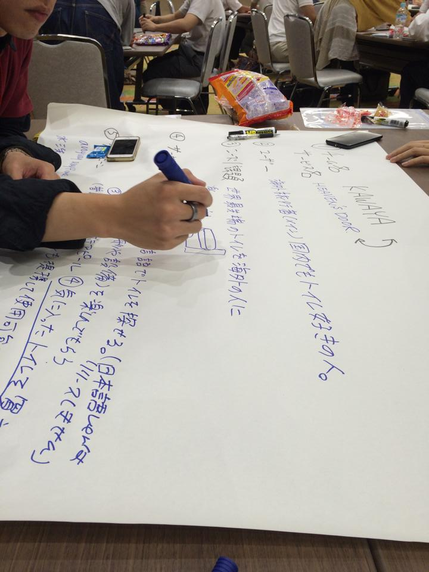
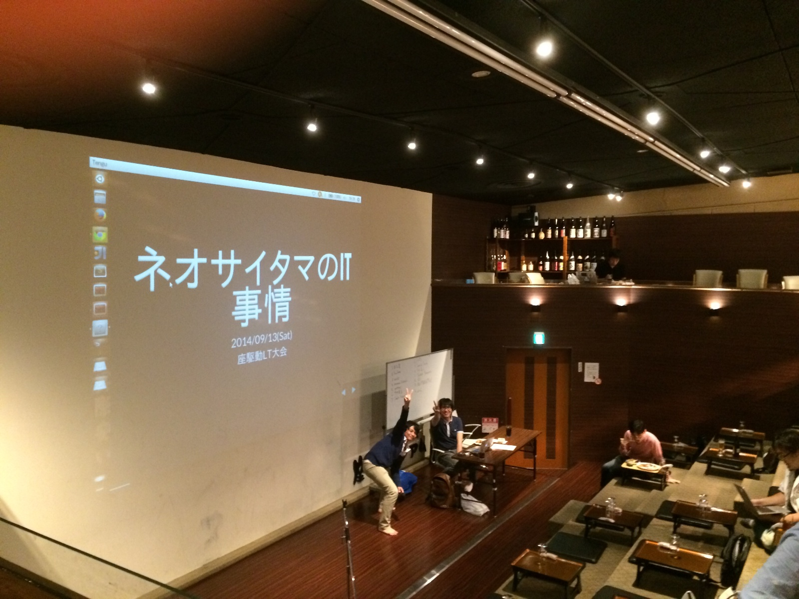

誰に言うまでもなく
2014年9月1日
githubの記事を読んでみて。
属人性の排除とかノウハウ共有にかけるコストの考え方や
gitを通してエンジニアがコードベースで
コミュニケーションする文化を組織に根付かせるのは
大切だと自身でも継続利用する事で感じました。
心に響いた一言
【そのすごいプログラマに「このコードいいね」って言われたら、
自信もってコード書けますよね。
コードの分からないマネージャに「おまえがんばってるな」って
言われるよりいいじゃないですか。】
2014年9月3日
やばい全然Doneしない。。。ちょっと気を抜くとコレか・・・
明日の朝会で言わねば!!
2014年9月4日
追い込みタスクDoneをやってしまった。
リング内での打ち合わせはokだったんだが。
場外では血の雨が降った・・・ キツいな。
2014年9月5日
なんか場外乱闘が思わぬ展開になり心痛。
2014年9月9日
いかん、、、バテ気味。明日、タスクボードを2日ぶりに見るのが怖い
2014年9月12日
MSからPullして編集してPushしてみる。一人共同開発なキブン
2014年9月12日
エンジニア系のイベントでこんなに初対面のヒトと盛り上がったのは始めてかも!!

2014年9月13日
恐るべし!!座・スタジアム

2014年9月16日
プ
ロフェッショナル・コネクターという職業に感じるモノが有りました。
2014年9月18日
今日は現場の皆への提案&サーヴァントチームのプランニング&別チームの下期活動ディスカッション。
そこから、vagrant勉強会 疲れたーけど、なんか充実感有り。
2014年9月20日
昨晩はとあるメンバの卒業の儀に立ち会った。
カレの前を向く姿勢はやっぱりスゴいわ。見習おうと共にジブンの道も模索しないと!!だ